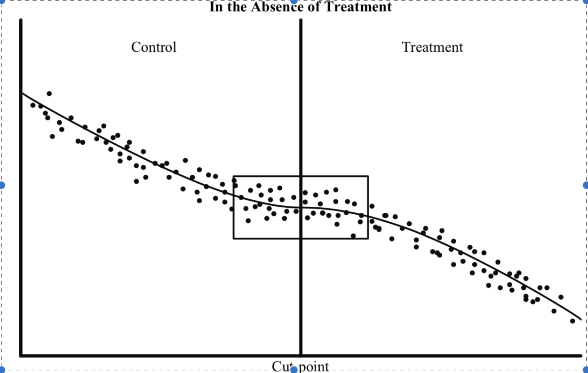
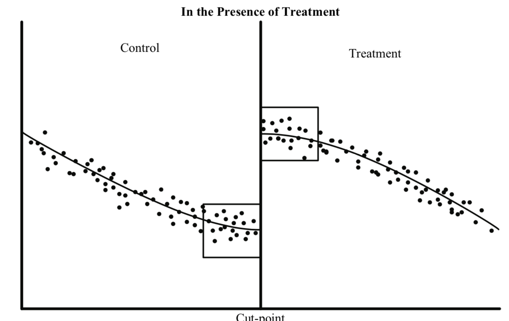

Spatial Regression Discontinuity Design Setup

Introduction
The current gold standard for testing the efficacy of an intervention/program/procedure requires this randomisation of participants to treatment and control. The following video by J-PAL gives a simple explanation of why this may be the case.
In many cases, randomisation to some program is not feasible. There may be political issues, information leaks and other real world problems that affect the conclusions that can be drawn. There are also number of theoretical critiques for randomised controlled trials.
Regression Discontinuity
Sometimes it is possible to exploit the sharp discontinuity in program application to see what the effect of the program is at the discontinuity. The key intuition is that at the a priori selected discontinuity, in a small window on either side of the discontinuity, the observations are essentially similar except for the treatment. For example, Ellen, Horn & Schwartz (2016) test the effect of residential location choices of households, whose oldest child becomes eligible for kindergarten. To do this, they focus on voucher receiving households whose oldest child just met the kindergarten eligibility cut-off date and those who missed the cut-off. The rating variable in this case is age in years by Sep 1 (or some other date) and cut-point is 5 years. Because the cut-off is determined independent of the participants in the program and by looking at the effect of vouchers in a local neighborhood around the cut-off, they determined the effect of vouchers on residential mobility.
There are multiple ways to conceptualise this design; 1) Discontinuity at the cut-point 2) local randomization at the cut-point. See below images for visualisation. In particular, please pay attention to the boxes around the cut-off that symblolise local neighborhood.
  Images adapted from Jacob et. al (2012)
Spatial Regression Discontinuity
It is relatively straightforward to construct a regression discontinuity when the rating variable is on a real line and cut-point is a point on that line, due to fact that real numbers is a totally ordered set, in particular, the comparability property w.r.t. \(\lt\) holds. However, it is often the case that the discontinuity is a spatial one.
For example, a subsidy for rooftop solar is implemented by a city within its jurisdiction, and we want to test if the subsidy increased the adoption of rooftop solar. The idea is parcels and households on both sides of the edge of the jurisdictions are similar and the key difference is the eligibility to the subsidy and therefore comparing the adoption rates among those households will help us identify if the subsidy has any effect.
Another example could be the effect of minimum wage regulation on employment levels as studied by Dube, Lester and Reich (2010). They do not employ a regression discontinuity design, but a matching design, but the intuition still applies. Counties at the state borders are likely to be similar and state policy on minimum wage is the only differentiator and differences in employment trends among these subset of counties (at the border) are an estimate of whether minimum wage policies reduce employment levels or not.
Similar design for testing the effect of Clean Cities Coalition (CCC) program on air quality and number of alternative fueling stations in counties within and outside the coalition boundaries can be found in Qiu and Kaza (2016). In this study, we not only use the spatial discontinuity of the boundaries but also the temporal discontinuity of when the CCC came into existence.
Illustration of research design in Qiu & Kaza (2016)
There are some key differences between standard regression discontinuity and the spatial version. See Keele and Titiunik (2015). They are 1) different measures of distance from the cutoffs may require different identification assumptions 2) Compound treatments 3) Boundary points at the cut-off have different interpretation.
For the most part, I am going to ignore these differences in this post for the sake of illustration. In particular, when polygonal entities (instead of points) are the observations of interest, many of the differences are not that important.
Identifying relevant observations on either side of the spatial discontinuity.
Let us assume that we have a discontinuity at the edge of the metropolitan statistical areas. For the purposes of illustration, I am going to download CBSA and county shapefiles from Census using tigris package. I am going to restrict my attention to Illinois for the sake of exposition.
cbsa <- core_based_statistical_areas()
cty_shp <- counties(state="il")#library(rgeos)
library(sf)
library(tidyverse)
library(tigris)
msa <- cbsa[cbsa$LSAD=="M1",] # Restrict attention only to Metro areas, ignore Micro
msa_IL <- msa[st_centroid(cty_shp, byid=T),] # Select metros that are in IL. There are 102 counties in IL.
Before running any topology operations, it is always a good idea to check to see if the geometry is valid (e.g. no self-intersections etc.)
cty_shp[!st_is_valid(cty_shp, byid = TRUE),]
# Simple feature collection with 0 features and 17 fields
# Bounding box: xmin: NA ymin: NA xmax: NA ymax: NA
# Geodetic CRS: NAD83
# [1] STATEFP COUNTYFP COUNTYNS GEOID NAME NAMELSAD LSAD CLASSFP
# [9] MTFCC CSAFP CBSAFP METDIVFP FUNCSTAT ALAND AWATER INTPTLAT
# [17] INTPTLON geometry
# <0 rows> (or 0-length row.names)Since this returns an empty list, lets proceed to extract all the counties within the MSA and outside MSA and use the TOUCHES relationship with the MSA boundary to extract counties within and outside the MSA. Note the > 0, for the reason that counties can be adjacent to many MSA boundaries.
msa_ctyID <- cty_shp$CBSAFP %in% msa_IL$CBSAFP
msa_cty <- cty_shp[msa_ctyID,]
nonmsa_cty <- cty_shp[!msa_ctyID,]
treat_cty <- msa_cty[rowSums(st_touches(msa_cty, st_boundary(msa_IL),sparse=F)) > 0,]
cntrl_cty <- nonmsa_cty[rowSums(st_touches(nonmsa_cty, st_boundary(msa_IL), sparse=F)) > 0,]Here is a visual representation.
Note how Kane and Dupage counties, near Chicago, that are completely within MSA, are not part of the treatment. Nor are Clark and Cumberland near Terra Haute, IN that are outisde MSA but not touching the boundary are not in Controls. It looks like we have achieved the right results.
Now that treatment and control groups are formulated at the spatial discontinuity boundary, standard techniques will then be followed to estimate the local treatment effect.
A major point to note, however, is the distinction between what is considered ‘local’ around the cutoff in RDD. In the standard case, the local is defined as a neighborhood based on the distance to the rating variable, i.e. rectangle around the cut-off. In the spatial case, the local is defined as any region that is on either side of the discontinuity (at least in this case). In some senses, Touches criterion is also a ‘distance’ metric, if we were to reimagine the regions as network nodes, where two nodes are connected by a link, if they are contigous. The network distance threshold is then 1. One could also imagine a different neighborhood around the discontinuity e.g. all regions within a k-buffer around the discontinuity, or all regions that are continguous of order 2 etc. The choice of this neighborhood is largely arbitrary and based on convention in the field.
Point Set Theory and the DE-9IM Matrix
Another way of doing this would be to use the function st_relate in sf or gRelate in rgeos. These functions would give the DE-9IM relation for each pair of polygons (e.g. FF2FF1212). Then it is a matter of parsing the code to figure out which ones are exterior and which ones are interior to MSA polygons.
It is useful to digress into some topology and summarize the relationships and their representations.
We need concepts for interior, exterior and a boundary for various spatial types of points, lines and polygons
- Point: Everything outside the point is in the exterior, no boundary
- Line: All points along length is interior, boundary is the two end points and exterior is everything outside the line.
- polygons: Standard definitions apply (see below), however, pay attention to the holes.
Relationships between polygons are described as a matrix produced by comparing the intersection of the Interior, Boundary and Exterior properties of both polygons. This comparison referred to as the Dimensionally Extended 9-Intersection Matrix or DE-9IM.
Image from Wikipedia
The above figure has the DE-9IM(a,b) string code is ‘212101212’, each character corresponding to the dimension of the intersction in the above matrix. Thus the relationship between two spatial entities can be described has string of 9 characters.
Consider the following definition of Area/Area overlap:
| OVERLAP | Interior | Boundary | Exterior |
|---|---|---|---|
| Interior | T | * | T |
| Boundary | * | * | * |
| Exterior | T | * | * |
Where T is dimension \(\ge\) 0, F is \(\neg\) T and * is any. So the binary representation for overlap is “T*T***T**”. Interpretation is that interiors of the two areas intersect, exteriors of the two areas intersect and atleast exterior of region a (row) intersects with interior of region b.
Another relevant relationship for this post is is TOUCHES, whose binary representation is “F***T****”, i.e. interiors do not intersect, but boundaries do (when a and b are not points).
So to return to our example to get control and treatment counties we can exploit these patterns. Counties at the edge of the MSA but are within it, intersect on the interior and the boundary but the no intersection among the exterior and the boundary. Counties at the edge of MSA that are outside the MSA, have intersection of the interior of the county and exterior of the MSA, boundaries of of the MSA and counties, and no intersection between interiors.
We will also exploit the feature that counties belong to a single MSA but could be exterior to multiple MSA. To account for that in the control observations, we simply exclude the observations that are already selected as treatment in the prior step.
msaId2 <- rowSums(st_relate(cty_shp, msa_IL, pattern="T*F*TF***", sparse = F)) > 0
treat_cty2 <- cty_shp[msaId2,] #Interiors and boundaries intersect, exteriors and interior does not and neither does boundary and exterior.
cntrl_cty2 <- cty_shp[rowSums(st_relate(cty_shp, msa_IL, pattern="F*T*T****", sparse =F)) > 0 & !msaId2,] #Interiors do not intersect, boundaries intersect, exteriors of MSA and interior of county intersects. Also ignore the ones that are already selected into treatment.
all.equal(treat_cty, treat_cty2)
# [1] TRUE
all.equal(cntrl_cty, cntrl_cty2)
# [1] TRUELimitations
There are many limitations of RD designs and the some of those limitations translate to spatial discontinuity designs. But there are three chief limitations, we should pay attention to.
Apriori determination/Endogeneity: It is mostly not true that the discontinuity is exogenous and determined a priori. For example, the MSA boundaries are largely determined by economic activity and inclusion in an MSA is usually correlated with the variable we are seeking to observe. Thus in many situations, it will not be possible to over come these limitations. One way to validate the results is to change the spatial discontinuity (by buffering outwards and inwards for example) and see if there is an observed effect of the ‘real’ boundary.
Fuzzy boundaries and Errors: Spatial operations are notoriously susceptible to boundary errors. Just as on real line, machine tolerances and representations of numbers trip up \(\lt\), \(=\) operators, errors at the boundary lines, accuracy and scale crucially determine whether the topological relations are identified or not (especially
st_relate). To see this issue in the example in the post, download and rerun the analysis with cartographic boundary files, e.g. using tigris download commandcounties(state="IL", cb=TRUE)etc. One can overcome this by considering all the polygons within the bounding box or \(\epsilon\) distance between the boundaries.Exchangeability: Exchangeability is an assumption that states that assignment of observations to the treatment condition is random, in other words, control regions could potentially be treatment regions. This is often a problem, if there are dramatic differences between regions within and outside the spatial discontinuity. For example, notice that we paid no attention to the size of the county in our analyses and if counties within MSA are smaller (on popultion, area, economic activity etc.) than outside MSA then there is a violation of exchangeability assumption. This assumption is often violated, so special attention should be paid to the descriptives.
Conclusions
All in all spatial regression discontinuity is becoming increasingly popular method to evaluate the effect of various programs, especially in a political system that is federated and the jurisdictional boundaries often serve as spatial discontinuity. While care should be paid to the analysis and the assumptions, it is a useful tool.
Nikhil Kaza
Professor
My research interests include urbanization patterns, local energy policy and equity